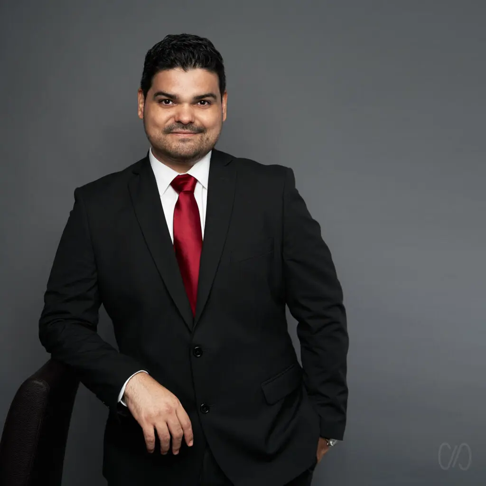
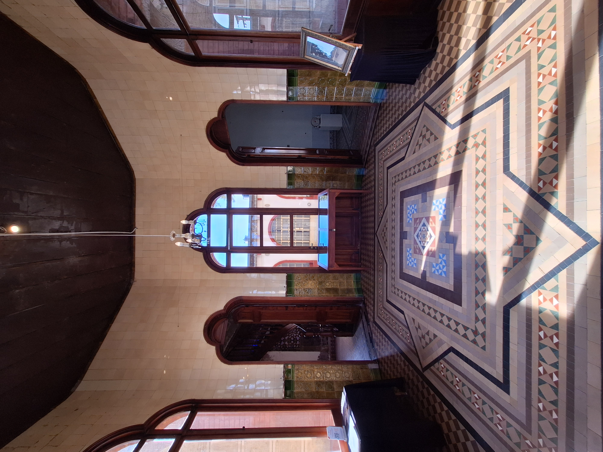
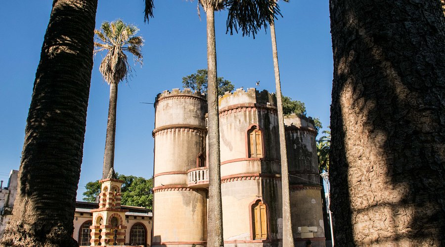
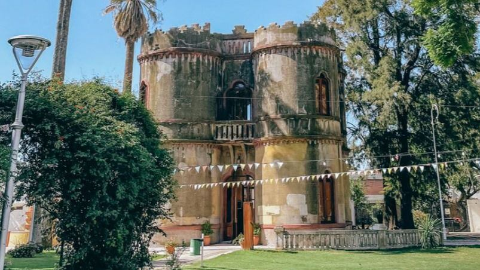

Bienvenidos al Museo Torre Céspedes
Un ícono arquitectónico del siglo XIX que guarda la memoria de la ciudad. Descubrí su historia y participá de sus actividades culturales.
Testimonios de visitantes
“Un lugar mágico lleno de historia y cultura. La visita guiada fue excelente.”

Jesús María
“La arquitectura de la torre es impresionante. Volveré con mi familia.”

Córdoba
“Excelente atención y actividades culturales para todas las edades.”

Villa del Totoral



Historia viva
Un edificio con más de un siglo de historia que hoy funciona como museo y espacio cultural para toda la comunidad.
Agenda
Encuentros literarios, exposiciones, música y talleres que hacen de la torre un espacio vivo.
Patrimonio
Biblioteca, salón cultural y salas de memoria que resguardan el patrimonio local de Jesús María.


Horarios
Los horarios pueden variar por actividades especiales.